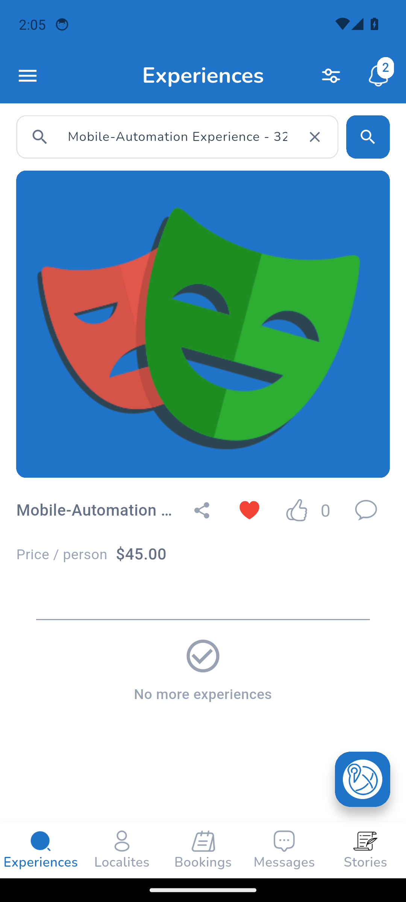
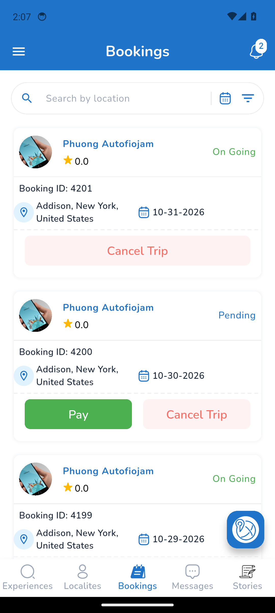

Mobile test report
Spec Files: 17 passed, 4 retries, 2 failed, 19 total (100% completed) in 00:37:12
Full test log · Passwords are masked. Element trees and the Appium log are in the run's mobile-test-results artifact.
1. mobile BKG-001 | Traveler books the created experience: 2 paid and 2 pending
tests/flows/booking/mobile-01-experience-booking.spec.ts
Error: Step "Pending booking 2: open the experience and fill in the booking" failed: strict mode violation: `$("//*[@content-desc and contains(@content-desc, \" 20\") and @clickable=\"true\"][1]")` resolved to 36 elements, expected 1.
Use `$$("//*[@content-desc and contains(@content-desc, \" 20\") and @clickable=\"true\"][1]")` to work with all matches, `$$("//*[@content-desc and contains(@content-desc, \" 20\") and @clickable=\"true\"][1]")[0]` if you explicitly want the first one, or narrow down the selector so it matches a single element.
Opt out for a single call with `$("//*[@content-desc and contains(@content-desc, \" 20\") and @clickable=\"true\"][1]", { strict: false })` or globally by setting `strictSelectors: false` in your WebdriverIO config.
at step (/home/runner/work/Imerzn-MobileTest/Imerzn-MobileTest/helpers/mobile-step.ts:11:11)
at async bookOnce (/home/runner/work/Imerzn-MobileTest/Imerzn-MobileTest/tests/flows/booking/mobile-01-experience-booking.spec.ts:62:7)
at async Context.<anonymous> (/home/runner/work/Imerzn-MobileTest/Imerzn-MobileTest/tests/flows/booking/mobile-01-experience-booking.spec.ts:132:5)

2. mobile BKG-001 | Traveler books the created experience: 2 paid and 2 pending
tests/flows/booking/mobile-01-experience-booking.spec.ts
Error: Step "Paid booking: open the experience and fill in the booking" failed: element ("//android.widget.Button[@content-desc="Book Experience"]") still not displayed after 60000ms
at step (/home/runner/work/Imerzn-MobileTest/Imerzn-MobileTest/helpers/mobile-step.ts:11:11)
at process.processTimers (node:internal/timers:518:9)
at async bookOnce (/home/runner/work/Imerzn-MobileTest/Imerzn-MobileTest/tests/flows/booking/mobile-01-experience-booking.spec.ts:62:7)
at async Context.<anonymous> (/home/runner/work/Imerzn-MobileTest/Imerzn-MobileTest/tests/flows/booking/mobile-01-experience-booking.spec.ts:126:5)

3. mobile DSH-002 | Bookings and Transaction History show the paid and pending bookings
tests/flows/booking/mobile-02-traveler-bookings-after-bookings.spec.ts
Error: Step "Verify all bookings in Bookings" failed: Expect $(`//*[contains(@content-desc, "
Booking ID: 4199
")]`).$(`.//*[@content-desc="Cancel Trip"]`) to be displayed
Expected: "displayed"
Received: "not displayed"
at step (/home/runner/work/Imerzn-MobileTest/Imerzn-MobileTest/helpers/mobile-step.ts:11:11)
at async Context.<anonymous> (/home/runner/work/Imerzn-MobileTest/Imerzn-MobileTest/tests/flows/booking/mobile-02-traveler-bookings-after-bookings.spec.ts:35:5)

4. mobile DSH-002 | Bookings and Transaction History show the paid and pending bookings
tests/flows/booking/mobile-02-traveler-bookings-after-bookings.spec.ts
Error: Step "Verify all bookings in Bookings" failed: Expect $(`//*[contains(@content-desc, "
Booking ID: 4199
")]`).$(`.//*[@content-desc="Cancel Trip"]`) to be displayed
Expected: "displayed"
Received: "not displayed"
at step (/home/runner/work/Imerzn-MobileTest/Imerzn-MobileTest/helpers/mobile-step.ts:11:11)
at async Context.<anonymous> (/home/runner/work/Imerzn-MobileTest/Imerzn-MobileTest/tests/flows/booking/mobile-02-traveler-bookings-after-bookings.spec.ts:35:5)
